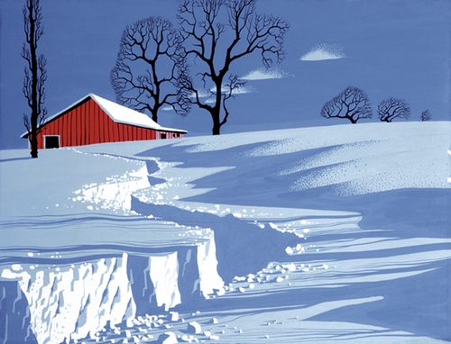

Eyvind Earle

I had never heard of Eyvind Earle until the other day, but I really like his style. Great work on his shadows, and a simple approach that still conveys realism. I think this piece (called Path in Snow), in particular, is gorgeous. So perfect.
Previously: Goals vs Systems Next: The Rise of the Expert Generalist